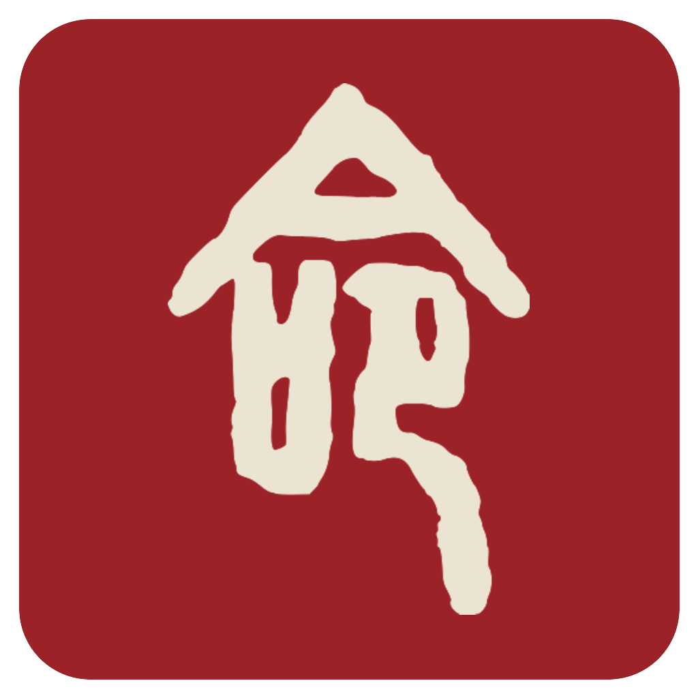

● Motion · Ink-Bleed Transition
通用换屏语言：点击「展开命书」→ 一团墨从指尖化开，新屏(命书)从墨晕里显出。墨边由 feTurbulence 位移做有机晕染,不是硬圆。从点击点放大,贴"墨在纸上洇开"的物理。换任意两屏复用。
feTurbulence
今日 · 庚子
命书 · 第一章

foreignObject
mask
r
feDisplacementMap